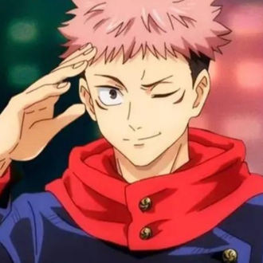
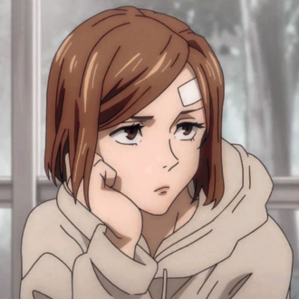
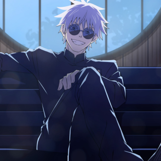
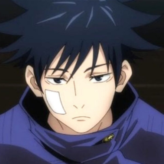
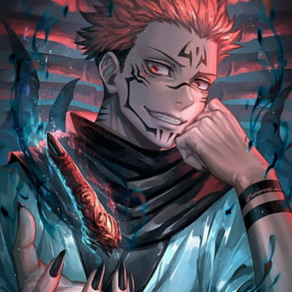

-
Yuji Itadori
Descrição
Yuji é um feiticeiro do primeiro ano, que entrou no mundo da bruxaria depois de comer um dos vinte dedos pertencentes a Ryomen Sukuna, um poderoso espírito amaldiçoado, um ser manifestado a partir da energia amaldiçoada das emoções negativas que fluem nos humanos. Yuji está disposto a arriscar sua vida por seus amigos e sua natureza atenciosa se esforça para ter sucesso da melhor maneira possível para que ninguém mais possa morrer.
-
Nobara
Descrição
Nobara é uma jovem confiante e impetuosa com um caráter inabalável. Mais do que tudo, Nobara está determinada a permanecer fiel a si mesma, não importa o que aconteça. Ela tem muito orgulho de ser uma garota bonita e uma lutadora forte, recusando-se a deixar que alguém a influencie.
-
Satoro Gojo
Descrição
Um dos principais personagens de Jujutsu Kaisen, e o sensei responsável pelo trio de protagonistas do anime. Ele é um feiticeiro jujutsu de Grau Especial (o mais alto de todos) e é conhecido por todos do mundo Jujutsu como o feiticeiro vivo mais poderoso. Às vezes, a personalidade dominante de Gojo pode ser percebida como arrogante ou opressora, mas isso muitas vezes é equilibrado por sua preocupação genuína pelas pessoas que ele se importa.
-
Megumi
Descrição
Megumi Fushiguro é um estudante dedicado, ávido para dominar a magia de jujutsu em prol do bem-estar de todos. Com a capacidade de manipular grandes quantidades de energia amaldiçoada, Megumi convoca várias criaturas para auxiliar na derrota de seus oponentes, ao lado de seus colegas de classe. Apesar da linhagem de sua família, Megumi é um indivíduo reservado e solitário com uma personalidade introvertida. Ele mostra pouca emoção e muitas vezes mantém uma expressão séria. No entanto, ele é incrivelmente leal aos seus amigos e fará o que for preciso para protegê-los.
-
Sukuna
Descrição
Sukuna é um espírito amaldiçoado de grau especial. Como o espírito amaldiçoado mais poderoso de toda a série, Sukuna possui uma vasta quantidade de energia amaldiçoada. A presença de Sukuna foi sentida em Shibuya assim que ele foi acordado. Sua natureza sádica e prazer em causar dor e sofrimento são traços marcantes, mas ele também demonstra inteligência e astúcia, usando estratégias e manipulações para alcançar seus objetivos.